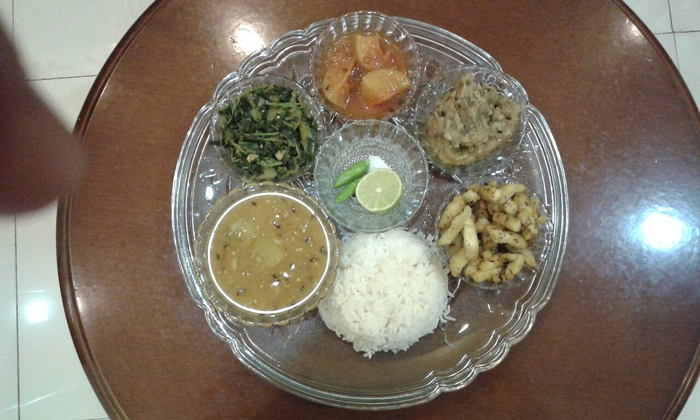

Bai
the mizo pot of greens and pumpkin, barely seasoned and softened with an alkaline pinch

Prep15 min
Cook25 min
Total40 min
Serves4
Difficultyeasy
Allergens: none of the common ones
Ingredients
Quantities for 4.
- 300g, roughly chopped Mustard Greensany sturdy local green does — this is what most kitchens use
- 250g, peeled and cut into 3cm chunks Pumpkin
- 100g, cut into 4cm lengths French Beansoptional
- 80g, rinsed twice and sliced Bamboo Shootfermented bamboo shoot is the classic addition; rinse brined shoot well or it dominatesoptional
- 150g, peeled and cubed Colocasiathe corm; peel it under running water and cook it right throughoptional
- 1/4 tsp Baking Sodastands in for chingal, the alkaline water Mizo cooks filter through wood ash; the catalogue has no chingal and this is the closest thing
- 4, slit Green Chilli
- 1 tbsp, julienned Gingeroptional
- to taste Salt
- 700ml Water
Cookware
stovetop
Before you start
- Bai has no onion, no garlic and no oil. That is not an omission — the point is the taste of the vegetables themselves, so buy them fresh and cut them the same day.
- A quarter teaspoon of baking soda is plenty. Too much and the greens go slimy and the pot smells faintly of soap.
- Peel colocasia under running water and rinse your hands after; the raw corm can itch.
Method
- Bring the water to a boil in a wide pot with the salt, slit chillies and ginger.
- Add the colocasia, if using, and boil 10 minutes — it takes longer than everything else and must be cooked right through.Undercooked colocasia is unpleasantly scratchy in the throat. Give it the full time.
- Add the pumpkin and boil 6 minutes, until the edges have just started to soften.
- Add the beans and bamboo shoot and cook 4 minutes.
- Pile in the mustard greens, push them under the liquid and cook 4 minutes, until they have collapsed and turned dark.
- Stir in the baking soda and simmer 3 minutes more. The greens will soften noticeably and the broth thickens a little.It goes in at the end. Added at the start it strips the colour out of the greens.
- Crush a few pieces of pumpkin against the side of the pot to thicken the liquid, taste for salt, and serve hot with rice and a chilli chutney.
Storage
Keeps 2 days refrigerated, though the alkali keeps working and the greens will be softer on day two. Reheat gently on the stovetop with a splash of water; do not boil hard.
Nutrition Good estimate
| Per serving269 g | Per 100 g | |
|---|---|---|
| Calories | 113 kcal | 42 kcal |
| Protein | 5.3 g | 2.0 g |
| Carbohydrate | 25.2 g | 9.4 g |
| of which sugars | 6.6 g | 2.5 g |
| Fibre | 6.1 g | 2.3 g |
| Fat | 0.7 g | 0.3 g |
| of which saturated | 0.1 g | 0.0 g |
| of which unsaturated | 0.3 g | 0.1 g |
Worked out from the listed quantities; most of the ingredient list could be weighed. Estimated from raw ingredients using USDA FoodData Central. Cooking changes are not modelled, and added salt is excluded, so sodium is not given.
Recipe v1.0.0, last updated 2026-07-31. Curated for Khaana and kept under version control.